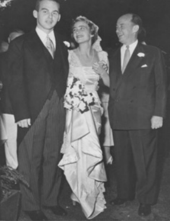
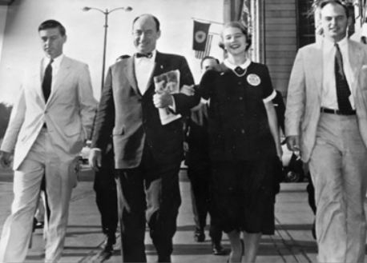
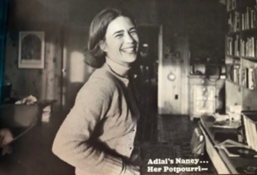
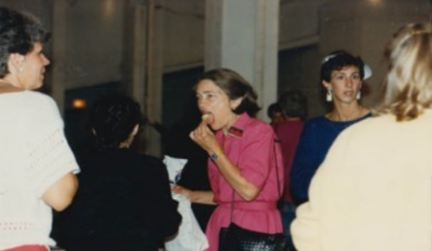
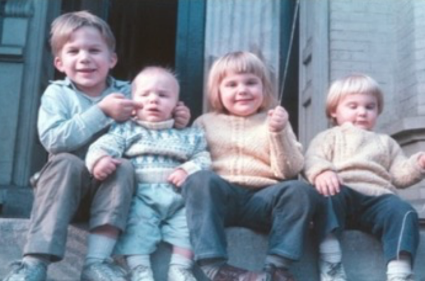
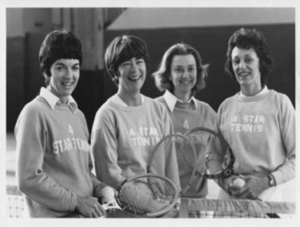
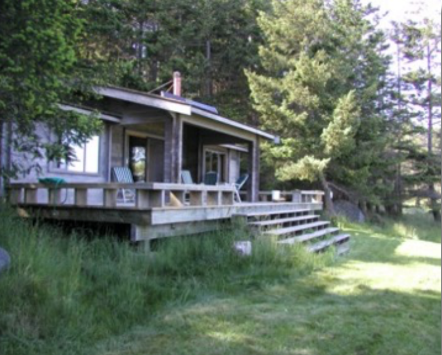
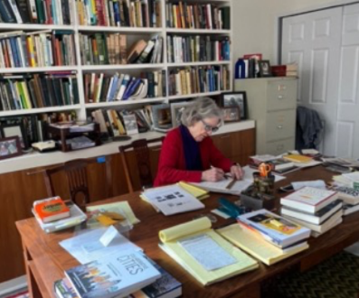

“I have no idea how you thumb through opportunities and make decisions. You just do it!”
-Nancy Stevenson
Nancy Anderson Stevenson will turn 90 this October. Her first mystery book will be published this summer. She is just beginning one of the most interesting decades of her life, but she has already had more interesting decades than most, thanks to her own energy, adventurous spirit, curiosity and dedication to public service.
Stevenson has been in the public eye for over 50 years. The wife of the late U.S. Senator from Illinois, Adlai Stevenson III, the Smith College graduate participated in over a dozen campaigns, shook tens of thousands of hands, and was nourished on the campaign trail by everything from donuts to the proverbial chicken dinners. During some hectic 50 years as a political wife, she energetically supported her husband’s campaigns for state representative, state treasurer, U.S. senator, and Illinois governor. And did I neglect to mention, raised two boys and two girls along the way?
There are many political wives for whom this description could suggest her life was entirely defined by her husband’s political needs. But Stevenson’s situation was quite the opposite. “Ad never told or asked me what to do,” she insists. Stevenson supported Adlai’s political success, but she did not ignore her family, her own interests, or her personal development. Which is not to suggest that she understood what was in store for her when she married Adlai, the dashing Marine, in 1955.

(L to R) Adlai Stevenson III, Nancy Stevenson, Gov. Adlai Stevenson II
“I had not a clue what [his political career] would mean for us,” she recalled. There was no mystery, though, about his plans. Adlai III was the son of presidential candidate and Illinois Governor Adlai Stevenson II (fondly known in the family as “The Guv”) and the grandson of Adlai Stevenson I, the 23rd vice president of the United States. “I always knew that he was going to run for office,” Stevenson said. After Adlai graduated from Harvard Law School, the Stevensons settled in Chicago; her husband joined the law firm of Mayer, Brown, & Platt. Their first child, Adlai IV, was a year old; the first of four children to be born every two subsequent years. “That kept me busy,” she admitted. Stevenson never thought about pursuing a career, herself, but juggled family, campaigning, and community service. [The Feminine Mystique would not be published until 1963, seven years later.]

Nancy Stevenson with her father-in-law, “The Guv”
In just two and a half years, Adlai won election to the Illinois state legislature, despite, according to his wife, his father’s urging him to wait until he was more established. Nancy Stevenson felt no pressure to campaign; few women were then even seen on the campaign trail, but she would come to love it, “What I liked about it was going into communities where the people who took you around were all volunteers and they all cared about their communities and so you heard what was on their mind. I liked that; I wasn’t a tourist. I thought it was fascinating.”

One of two cookbooks Stevenson put together at the behest of Adlai’s campaign
After one term in the state legislature, Adlai was elected state treasurer; he continued to commute to Springfield for four years while Stevenson and her children remained in Chicago. “I felt free to pursue my own interests…I wanted to become a docent at the Art Institute but at that time the Art Institute wouldn’t have a pregnant person, scandalizing the kids? I mean really!” She would be active in many other organizations, including Call for Action, Know Your Chicago, the Lincoln Park Zoo, and various activities with her children’s schools. She also was an enthusiastic campaigner. She and a friend would get in the car and go to an event scheduled by the campaign. “There was always lots of eating and lots of handshaking, but nobody wrote a speech for me. I was on my own!”

Stevenson on the campaign trail
Stevenson’s domestic life would take a dramatic shift when Adlai ran in a special election to fill the term of U.S. Senator from Illinois Everett Dirksen, who had died in 1969. Adlai won (and would be re-elected for a full six-year term in 1974). She moved the family to Washington DC and began to explore her new life as a Senate Wife. “At first I was excited, but the move and finding a house seemed a little daunting, but then it happened without too much trouble.”

The Stevenson children: (L to R) Adlai IV, Warwick, Lucy, Kate
One of the traditional roles for a Senate Wife was rolling bandages for the Red Cross every Tuesday. “I went to several sessions, but the bandages [it turned out] were not useable. They were not sanitary and were a bit rough…I decided that this was not for me.” Stevenson felt she needed to know more American History and went back to graduate school at American University. “I audited a course first, American Thought. I loved it…I then had to take some tests and got into the university. My fellow students were all much younger, and they’d ask, ‘What was life like in the ‘50’s?’” Stevenson completed her master’s degree as her husband completed his second term in the US Senate.

Senate Wives: Marge Stoller, Nancy Stevenson, Marge Elfin, Joan Mondale
The next move was back to Chicago, where the family had spent vacations whenever possible. They had also purchased farmland in Jo Daviess County in northwestern Illinois. Adlai rejoined his law firm but would soon run for governor; he closely lost his bid in 1982 and again in 1986 when he ran on a third-party ticket. Moving into international business affairs in China and Japan, Adlai and his wife travelled extensively in East Asia. Meanwhile, she was named to the
board of the Illinois Humanities Council. She evaluated proposals for funding, including Ken Burns’ Civil War documentary series, funded by Humanities Councils in many states; then she was named chair. She was next nominated to the National Federation of State Humanities Councils and later chaired it as well. “I loved it! There were these thoughtful readers, thinkers, talkers, and they believed, as I passionately do, that debates, public exhibitions, publications,
and good documentaries are important.”
After her terms on the Humanities Council, she became active with Voices for Illinois Children. A state-wide advocacy organization on behalf of children, Voices was founded by Jerry Stermer, the first president. Stevenson served on the board and was then named CEO, where she pursued fundraising and friend-raising for ten years, tapping her broad knowledge of the state of Illinois. She was delighted to have a paycheck for the first time. “I loved it! I think having your own paycheck is fabulous. It wasn’t very big because I insisted that it not be very big, but it’s very different when you make your decision about what you want to buy.”
Throughout these years, Stevenson considered writing. Stevenson credits her writing career to her love of telling stories. “I had always been a storyteller in the car… I wrote a story for my first grandchild Katie about spring flowers in the valley… I’d written for Illinois Issues and Illinois Children, but I was not skilled. I wrote numerous notes to myself, ‘Nancy, write this down… you’ve always wanted to write.’ Stevenson took her first children’s book to a writer’s conference in Key West. You had to submit a document to critique… I received a lovely straightforward critique from Richard Peck, who lambasted the book.” Realizing she needed more support, she pursued her MFA from the Vermont College of Fine Arts, (then the Vermont College for Writing for Children). “As part of the course, I wrote Capitol Code… self-published like my first one… this was a mystery story set in Washington, DC. I sent it to my grandchildren and family. I learned I didn’t know anything about writing. ‘Viewpoint’ – I thought it was opinion rather than who’s speaking… I didn’t have any idea…” Her skills tweaked, she began to think about a novel.
The foundation of Stevenson’s upcoming mystery novel goes back to her wedding trip in the Pacific Northwest. The Stevensons visited friends on Salt Spring Island in British Columbia and were entranced by this corner of the world. Years later, she and Adlai visited friends there again who took them to see nearby Hernando Island. The Stevensons bought property, built a Pan Abode house, and for some 20 years spent two to three weeks there a year. Stevenson would begin writing about Hernando and life in the area, only to put the work away to work on sporadically for years.

The Stevenson home on Hernando Island, BC
After Adlai’s retirement, the family passion for public affairs took a new form. Adlai and his wife with support from their son Warwick, established the Adlai Stevenson Center on Democracy in 2008 on family property in Lake County. Nancy supported production of live events and Zoom sessions on local, national, and international affairs featuring leading scholars, politicians, and activists. After Adlai’s death, the Center was closed, but Stevenson wanted to ensure its mission of educating people to make sound judgments on issues and candidates continued. The board selected Injustice Watch as worthy of receiving its remaining funds.
WTTW’s Brandis Friedman and then Head of the Institute of Politics, University of Chicago, David Axelrod at the Stevenson Center for Democracy
Between 1987 and until the Hernando property was sold in 2011, the Stevensons took many trips up and down the straits of Georgia. Stevenson became aware of the pollution caused by numerous paper mills in the area, more background for her developing book. She researched the area in depth. “I was reading all of those Canadian writers…[like] Hilary Stewart…who documented the trees, cedars, fishing of the tribes…”
Adlai’s development of Lewy Body disease during the last few years of his life opened a new chapter for Stevenson. While focused on caring for her husband, Nancy Stevenson began working again on her book. “I had been writing it for a while when he was sick…but after his death [2021] I finished it off. It had to be a mystery because I needed a plot. I wanted to explore how people learned about pollution…[it’s] all related to logging and the process of pulping…In the Straits of Georgia there are multiple pulp mills on both sides.”
British Columbia Pulp mill Vancouver Sun
While writing the book, she also dealt with the sale of the family home in Lincoln Park, where the family had lived for 40 years. “I didn’t want to stay. The house had problems, and it was too big.” Physically strong, Stevenson had no need for assisted living, but didn’t want the maintenance worries of her own home. “Finding a place to live while trying to clear out the house while planning the memorial service was a challenge,” she said. After exploring many options, she found a roomy apartment on Chicago’s near north side. Stevenson had several projects in mind when she set up her new home office.

Nancy Stevenson in her home office
This time, Stevenson did not self-publish her book as she had with her children’s books. The Wild Rose Press enthusiastically signed on to publish Long Reach. She’s now learning the new skill of selling a book. “It feels at the moment busy! I’ve been told one must promote the book! I hadn’t promoted my self-published books. It was very happy for me to promote candidates. I liked it, but to promote myself is new.” She is learning social media and may do a podcast.
Stevenson isn’t just promoting Long Reach. She has written a second book, a novel about a disparate group of four people who all start new beginnings in Galena, IL; a third one is in the works related to her Asian adventures. “The children are urging me to write a book about the political stories I tell…I’ve always steered away from that, feeling it’s just anecdotal, but I might do that.”
Nancy acknowledges her new identity as an author. “[I’m giving] Little talks on the theme of ‘never too late.’ It’s a long process of stumbling from one phase of my life. This phase was less difficult than I expected. I’d never lived alone. Suddenly I’m alone. It’s not bad. Adlai was always confident that I could be alone when he traveled, and he traveled a lot… I’ve never felt alone. I have all of these experiences… Writing has given me these characters, if I’m lying awake at night,
I think about my characters.”
“Having friends that you are truly comfortable with is very important. Having family is really important. Being alone, I don’t have to worry about what to serve for dinner. Some nights I just eat peanuts!”